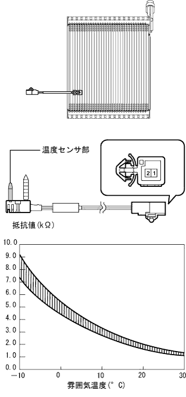

Cooler Thermistor NO.1 Inspection |
| 1. Inspect Cooler Thermistor NO.1 |
 |
Cooler Thermistor NO.1 Resistance Inspection
Using SST (Toyota electrical tester), measure the resistance between the connector terminals.
| Tester Connection | Condition | Standard |
|---|---|---|
| 1 - 2 | -10°C | 7.30 to 9.10 kΩ |
| -5°C | 5.65 to 6.95 kΩ | |
| 0°C | 4.40 to 5.35 kΩ | |
| 5°C | 3.40 to 4.15 kΩ | |
| 10°C | 2.70 to 3.25 kΩ | |
| 15°C | 2.14 to 2.58 kΩ | |
| 20°C | 1.71 to 2.05 kΩ | |
| 25°C | 1.38 to 1.64 kΩ | |
| 30°C | 1.11 to 1.32 kΩ |